Una distribución de frecuencias constituye una de las herramientas fundamentales del análisis estadístico descriptivo. Su propósito es organizar y resumir un conjunto de datos mediante el conteo de las veces que aparece cada valor o categoría de una variable.
Cuando se analiza una sola variable, se construye una distribución de frecuencias unidimensional. Cuando se estudian simultáneamente dos variables, se utiliza una distribución de frecuencias bidimensional, también conocida como tabla de contingencia cuando las variables son categóricas.
Estas herramientas permiten transformar grandes cantidades de información en estructuras organizadas que facilitan la interpretación, comparación y representación gráfica de los datos.
En el contexto de la Educación, por ejemplo, pueden utilizarse para estudiar:
Nivel educativo de los estudiantes. Tipo de recurso educativo utilizado. Satisfacción con una institución educativa. Edad de los estudiantes. Rendimiento académico. Relación entre nivel educativo y rendimiento académico. Relación entre género y participación en actividades escolares. Relación entre estrato socioeconómico y acceso a recursos educativos.
Distribución de Frecuencias Unidimensional
Concepto
Una distribución de frecuencias unidimensional organiza los valores observados de una única variable junto con el número de veces que aparece cada valor o categoría.
Sea:
X=\{x_1,x_2,\ldots,x_n\}
un conjunto de n observaciones de una variable estadística X.
La distribución de frecuencias permite determinar cuántas observaciones corresponden a cada valor o categoría de la variable.
Elementos de una Distribución de Frecuencias
Una tabla de frecuencias puede contener las siguientes columnas:
Símbolo
Nombre
Interpretación
xi
Valor o categoría
Valor observado de la variable
fi
Frecuencia absoluta
Número de veces que aparece xi
Fi
Frecuencia absoluta acumulada
Número de observaciones hasta xi
hi
Frecuencia relativa
Proporción de observaciones correspondiente a xi
Hi
Frecuencia relativa acumulada
Proporción acumulada hasta xi
%
Porcentaje
Frecuencia relativa expresada en porcentaje
Frecuencia absoluta
La frecuencia absoluta de un valor x_i, representada por f_i, corresponde al número de veces que dicho valor aparece en el conjunto de datos.
Se cumple:
\sum_{i=1}^{k} f_i=n
donde:
k = número de valores o categorías.
f_i = frecuencia absoluta.
n = tamaño de la muestra.
Ejemplo
Supongamos que se consulta a 20 ciudadanos sobre el número de trámites realizados durante el último año:
library(ggplot2)ggplot( datos_grafico,aes(x = Modalidad,y = Frecuencia,fill = Satisfaccion )) +geom_col(color =NA ) +scale_fill_manual(values =c("Alta"="#E65C9C", # Rosado fucsia/oscuro bien marcado"Media"="#FF8DA1", # Rosado medio vibrante"Baja"="#FFC0CB"# Rosado pastel claro y visible ) ) +labs(title ="Distribución de la satisfacción según modalidad",x ="Modalidad",y ="Frecuencia" ) +theme_minimal() +theme(axis.line =element_line(color ="black") )
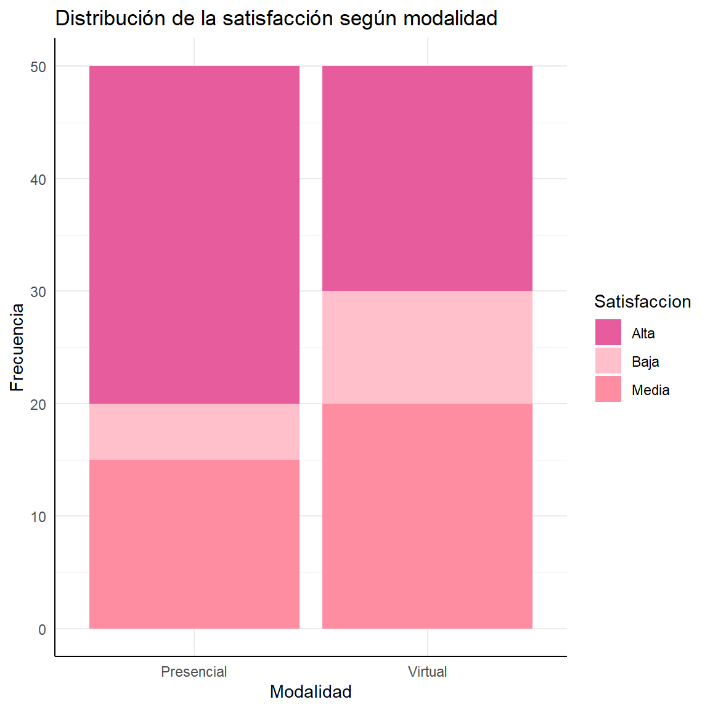
Barras proporcionales
Para comparar estructuras porcentuales entre grupos:
Ver código
library(ggplot2)ggplot( datos_grafico,aes(x = Modalidad,y = Frecuencia,fill = Satisfaccion )) +geom_col(position ="fill",color =NA ) +scale_fill_manual(values =c("Alta"="#E65C9C", # Rosado fucsia/oscuro bien marcado"Media"="#FF8DA1", # Rosado medio vibrante"Baja"="#FFC0CB"# Rosado pastel claro y visible ) ) +scale_y_continuous(labels = scales::percent ) +labs(title ="Distribución porcentual de la satisfacción",x ="Modalidad",y ="Porcentaje" ) +theme_minimal() +theme(axis.line =element_line(color ="black") )
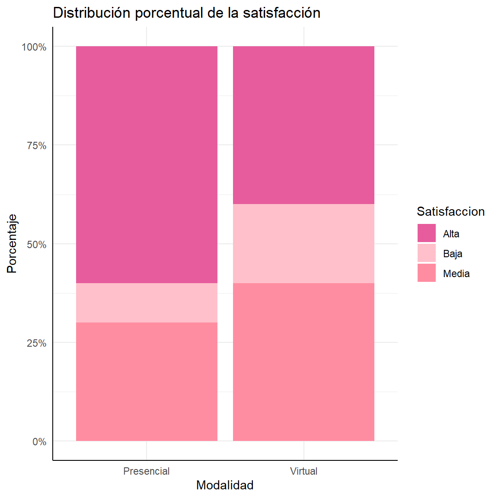
Este gráfico resulta especialmente útil cuando los tamaños de los grupos son diferentes.
Distribución bidimensional y asociación
Una de las principales aplicaciones de las tablas bidimensionales consiste en estudiar si existe una posible relación o asociación entre dos variables.
Por ejemplo:
\text{Modalidad de atención}
\quad\longleftrightarrow\quad
\text{Satisfacción}
Si las distribuciones condicionales son muy diferentes entre las modalidades, puede existir evidencia descriptiva de asociación.
Sin embargo, una diferencia descriptiva no significa necesariamente que exista una asociación estadísticamente significativa.
Para evaluar formalmente la asociación entre dos variables categóricas puede utilizarse, entre otras herramientas, la prueba chi-cuadrado de independencia.
Prueba chi-cuadrado en R
A partir de una tabla de contingencia:
Ver código
chisq.test(tabla)
Pearson's Chi-squared test
data: tabla
X-squared = 4.381, df = 2, p-value = 0.1119
La hipótesis nula es:
H_0:
\text{Las variables son independientes}
Mientras que la hipótesis alternativa es:
H_1:
\text{Las variables no son independientes}
La decisión estadística se basa generalmente en el valor-p.
Si:
p<\alpha
se rechaza H_0.
Si:
p\geq\alpha
no se rechaza H_0.
Es habitual utilizar:
\alpha=0.05
Diferencia entre Distribución Unidimensional y Bidimensional
Característica
Unidimensional
Bidimensional
Número de variables
1
2
Objetivo
Describir una variable
Analizar dos variables conjuntamente
Tabla principal
Tabla de frecuencias
Tabla de contingencia
Frecuencia
f_i
n_{ij}
Frecuencia marginal
No aplica
Sí
Frecuencia conjunta
No aplica
Sí
Frecuencia condicional
No aplica
Sí
Asociación
No
Sí
Chi-cuadrado
No necesariamente
Sí, para variables categóricas
Aplicación y Herramientas de RStudio
Funciones fundamentales de R
Las siguientes funciones son especialmente útiles para trabajar con distribuciones de frecuencias:
Función
Utilidad
table()
Frecuencias absolutas
prop.table()
Frecuencias relativas
cumsum()
Frecuencias acumuladas
xtabs()
Tablas de contingencia
addmargins()
Totales marginales
margin.table()
Frecuencias marginales
cut()
Agrupar variables cuantitativas
ggplot()
Visualización
geom_bar()
Gráfico de barras
geom_col()
Barras con frecuencias existentes
geom_histogram()
Histograma
chisq.test()
Prueba chi-cuadrado
Función general para construir una tabla de frecuencias
Valor fi Fi hi Hi Porcentaje
1 Alta 13 13 0.4333333 0.4333333 43.33333
2 Baja 6 19 0.2000000 0.6333333 20.00000
3 Media 11 30 0.3666667 1.0000000 36.66667
Ejemplo aplicado a la Educación
Supongamos que una institución educativa realiza una encuesta a estudiantes para estudiar la satisfacción con el proceso educativo.
Se registran las variables:
Edad Modalidad Satisfaccion Grado Numero_actividades
Una distribución unidimensional puede responder:
¿Cuál es el nivel de satisfacción predominante entre los estudiantes?
Mientras que una distribución bidimensional puede responder:
¿Cómo se distribuye el nivel de satisfacción según la modalidad de aprendizaje?
La primera pregunta utiliza una distribución de frecuencias unidimensional.
La segunda utiliza una distribución de frecuencias bidimensional.
Flujo de trabajo recomendado en RStudio
Un análisis profesional puede seguir la siguiente secuencia:
Importación de datos
↓
Exploración de variables
↓
Identificación del tipo de variable
↓
Distribución unidimensional
↓
Frecuencias absolutas y relativas
↓
Representación gráfica
↓
Distribución bidimensional
↓
Frecuencias conjuntas y marginales
↓
Porcentajes condicionales
↓
Representación gráfica
↓
Análisis de asociación
↓
Interpretación estadística
Recomendaciones para el análisis estadístico
Al construir e interpretar una distribución de frecuencias es importante:
Identificar correctamente el tipo de variable.
Diferenciar variables cualitativas y cuantitativas.
Utilizar frecuencias absolutas cuando interesa conocer cantidades.
Utilizar frecuencias relativas o porcentajes cuando se desean comparar grupos.
Emplear frecuencias acumuladas cuando la variable posee un orden natural.
Para datos continuos con muchos valores, considerar agrupación en intervalos.
En tablas bidimensionales, especificar claramente si los porcentajes se calculan por filas, columnas o sobre el total.
Complementar las tablas con representaciones gráficas apropiadas.
No confundir asociación descriptiva con causalidad.
Cuando sea pertinente, complementar el análisis descriptivo con pruebas estadísticas.
3 .Conclusiones
Las distribuciones de frecuencias unidimensionales permiten organizar y resumir la información correspondiente a una sola variable mediante frecuencias absolutas, acumuladas, relativas y porcentuales.
Las distribuciones de frecuencias bidimensionales permiten analizar conjuntamente dos variables y constituyen una herramienta fundamental para estudiar patrones de asociación mediante frecuencias conjuntas, marginales y condicionales.
En R/RStudio, funciones como table(), prop.table(), cumsum(), xtabs() y ggplot2 permiten automatizar gran parte del proceso de construcción, análisis y visualización de las distribuciones de frecuencias.
El análisis estadístico debe ir más allá de la construcción mecánica de tablas: es fundamental interpretar los resultados dentro del contexto de investigación y seleccionar correctamente los porcentajes, gráficos y procedimientos estadísticos de acuerdo con el tipo de variables estudiadas.
Resumen de fórmulas
Frecuencia absoluta
f_i
Frecuencia absoluta acumulada
F_i=\sum_{j=1}^{i}f_j
Frecuencia relativa
h_i=\frac{f_i}{n}
Frecuencia relativa acumulada
H_i=\sum_{j=1}^{i}h_j
Porcentaje
p_i=100h_i
Frecuencia conjunta
n_{ij}
Frecuencia marginal de X
n_{i.}=\sum_jn_{ij}
Frecuencia marginal de Y
n_{.j}=\sum_in_{ij}
Frecuencia relativa conjunta
h_{ij}=\frac{n_{ij}}{n}
Frecuencia condicional
h_{j|i}=\frac{n_{ij}}{n_{i.}}
Regla de Sturges
k=1+3.322\log_{10}(n)
Amplitud
A=\frac{R}{k}
Rango
R=X_{\max}-X_{\min}
Marca de clase
x_i=\frac{L_i+U_i}{2}
4 .Leer el Dataset
Ver código
educacion <-read_excel("Datos/educacion.xlsx")
5 .Conocer el Dataset
Mostrar algunas filas del dataset
Ver código
head(educacion, 4)
# A tibble: 4 × 10
ID Genero Nivel_Educativo Estrato Cursos Horas Promedio `Asistencia (%)`
<dbl> <chr> <chr> <chr> <dbl> <dbl> <dbl> <dbl>
1 1 Femenino Universidad Alto 5 26.8 4.37 51.3
2 2 Femenino Universidad Bajo 4 9.05 4.9 51.1
3 3 Femenino Secundaria Medio 8 28.2 1.26 92.4
4 4 Femenino Universidad Bajo 6 17.9 1.96 64.8
# ℹ 2 more variables: Tecnologia <chr>, Satisfaccion <chr>
# Crear la tabla originaltabla <-tibble(GENERO = educacion$Genero) %>%group_by(GENERO) %>%summarise(fi =n()) %>%mutate(hi =round(fi/sum(fi), 4), Porcentaje =paste0(hi*100, "%"),)# Convertir las columnas a character para evitar conflictostabla <- tabla %>%mutate(GENERO =as.character(GENERO))# Añadir la fila de totalestotales <-tibble(GENERO ="Total",fi =sum(tabla$fi),hi =round(sum(tabla$hi), 4),Porcentaje =paste0(round(sum(tabla$hi) *100, 2), "%"))# Combinar la tabla con los totalestabla_final <-bind_rows(tabla, totales)# Mostrar la tabla final con kabletabla_final %>% knitr::kable(col.names =c("Género", "$f_i$", "$h_i$", "Porcentaje"), align =c("l", "c", "c", "c"))
Género
f_i
h_i
Porcentaje
Femenino
161
0.5367
53.67%
Masculino
139
0.4633
46.33%
Total
300
1.0000
100%
Ver código
# Calcular los porcentajes de cada categoría en la variable Generogenero_counts <- educacion %>% dplyr::count(Genero) %>%mutate(porcentaje = n /sum(n) *100)# Crear el diagrama de barrasggplot(genero_counts, aes(x = Genero, y = porcentaje, fill = Genero)) +geom_bar(stat ="identity") +scale_fill_manual(values =c("#FFC0CB", "#FF8DA1")) +labs(title ="Distribución Porcentual del Género de los Encuestados",x ="Género",y ="Porcentaje" ) +geom_text(aes(label =sprintf("%.1f%%", porcentaje)),vjust =-0.5,color ="black",size =3.5 ) +theme_classic() +theme(legend.position ="none")
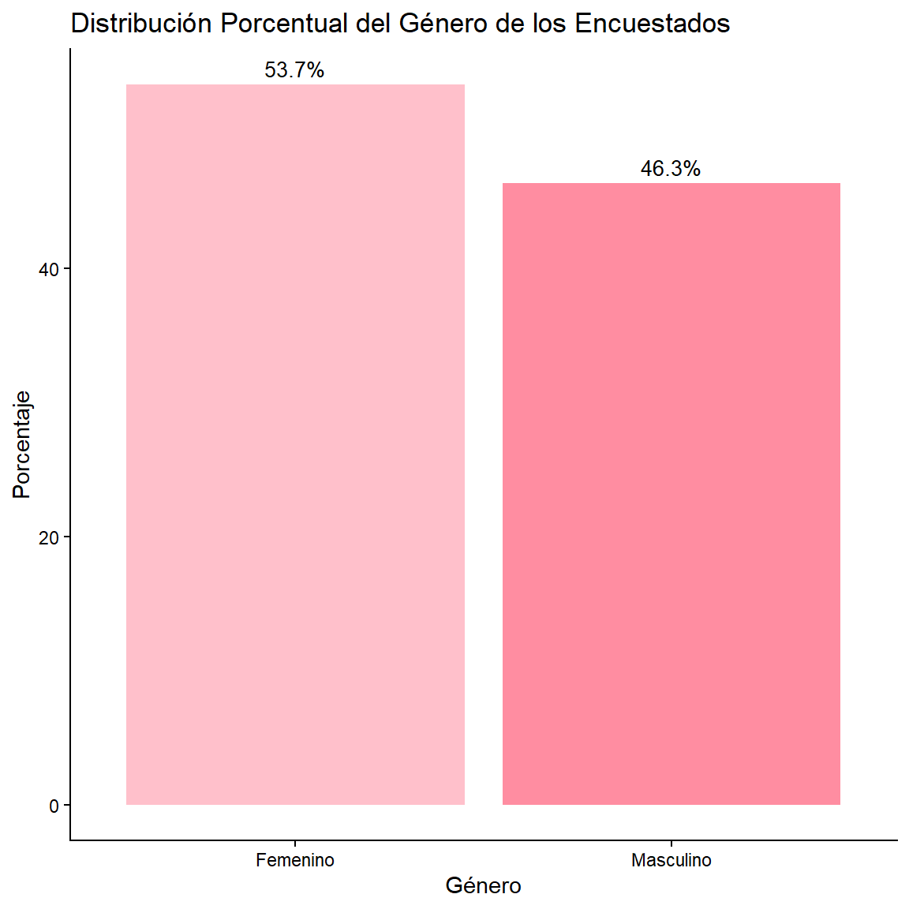
Ver código
# Cargar las librerías necesariaslibrary(ggplot2)library(dplyr)library(readxl)# Calcular los porcentajes de cada categoría en la variable Generogenero_counts <- educacion %>% dplyr::count(Genero) %>%mutate(porcentaje = n /sum(n) *100)# Crear el diagrama circularggplot(genero_counts, aes(x ="", y = porcentaje, fill = Genero)) +geom_bar(stat ="identity", width =1) +coord_polar("y") +scale_fill_manual(values =c("#FFC0CB", "#FF8DA1")) +labs(title ="Distribución Porcentual del Género de los Encuestados") +theme_minimal() +theme(axis.title.x =element_blank(),axis.title.y =element_blank(),panel.grid =element_blank(),axis.text.x =element_blank()) +geom_text(aes(label =sprintf("%.1f%%", porcentaje)), position =position_stack(vjust =0.5), color ="white", size =4)
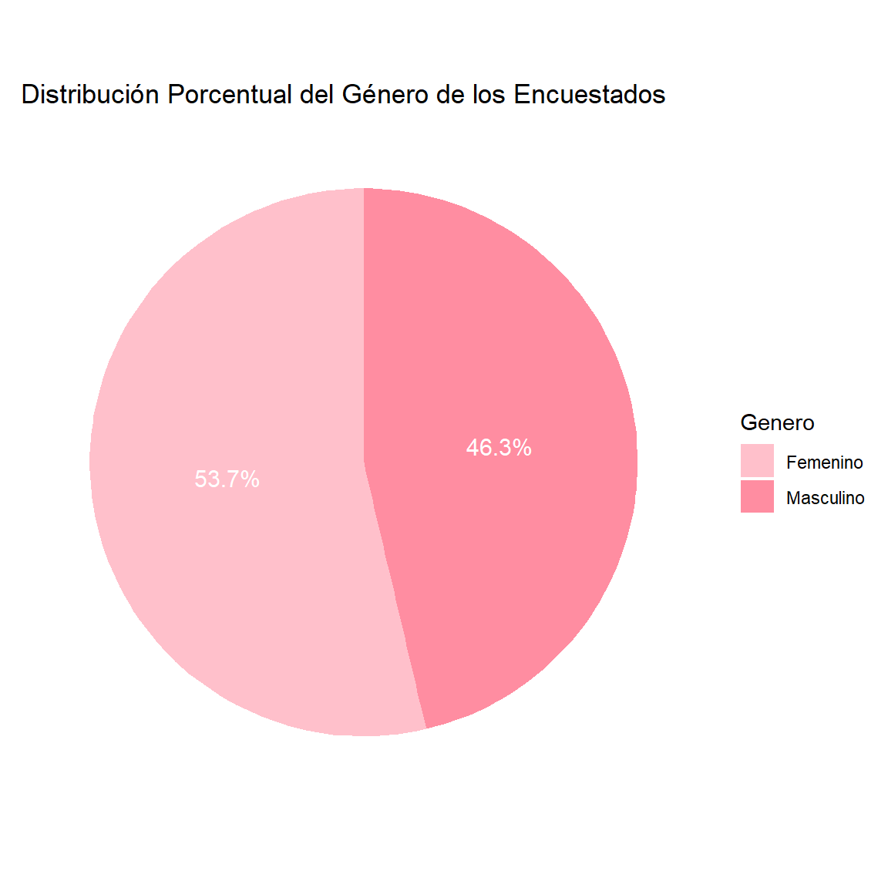
La distribución por género de los 300 estudiantes encuestados de la Universidad del Tolima muestra una composición relativamente equilibrada. El género femenino presenta la mayor frecuencia, con 161 estudiantes, equivalentes al 53,67 %, mientras que el género masculino está conformado por 139 estudiantes, correspondientes al 46,33 %.
La diferencia entre ambos grupos es de 7,34 puntos porcentuales, lo que evidencia una ligera predominancia femenina. Sin embargo, ambos géneros cuentan con una representación significativa dentro de la muestra analizada.
6.2 .Variable Ordinal
Distribución de Frecuencias de los Encuestados según el Nivel Educativo
TipLa variable ordinal tiene los cuatro tipos de frecuencias
# Crear la tabla originaltabla <-tibble(Educativo = educacion$Nivel_Educativo) %>%mutate(Educativo =factor( Educativo,levels =c("Secundaria", "Universidad", NA),exclude =NULL ) ) %>%group_by(Educativo, .drop =FALSE) %>%summarise(fi =n(), .groups ="drop") %>%mutate(hi =round(fi/sum(fi), 4), Porcentaje =paste0(hi*100, "%"),Fi =cumsum(fi),Hi =cumsum(hi) )# Convertir las columnas Educativo, Fi, y Hi a character para evitar conflictostabla <- tabla %>%mutate(Educativo =as.character(Educativo),Fi =as.character(Fi),Hi =as.character(Hi))# Añadir la fila de totales, dejando Fi y Hi vacíostotales <-tibble(Educativo ="Total",fi =sum(tabla$fi),hi =round(sum(tabla$hi), 4),Porcentaje =paste0(round(sum(tabla$hi) *100, 2), "%"),Fi ="",Hi ="")# Combinar la tabla con los totalestabla_final <-bind_rows(tabla, totales)# Mostrar la tabla final con kabletabla_final %>% knitr::kable(col.names =c("Nivel Escolaridad", "fi", "hi", "Porcentaje", "Fi", "Hi"), align =c("l", "c", "c", "c", "c", "c") )
La distribución del nivel educativo de los 300 encuestados presenta una composición relativamente homogénea entre las categorías registradas. La mayor proporción corresponde a Secundaria, con 105 participantes, equivalentes al 35 % de la muestra, seguida por Universidad, con 102 encuestados (34 %). Por su parte, la categoría NA agrupa a 93 participantes, lo que representa el 31 % del total.
En términos acumulados, las categorías Universidad y Secundaria concentran conjuntamente el 69 % de los encuestados, mientras que al incorporar la categoría NA se alcanza el 100 % de la muestra. En general, no se observan diferencias porcentuales amplias entre las categorías, lo que evidencia una distribución relativamente equilibrada del nivel educativo reportado por los participantes.
Distribución de Frecuencias de los Encuestados según el Estrato
# Crear la tabla originaltabla <-tibble(ESTRATO = educacion$Estrato) %>%group_by(ESTRATO) %>%summarise(fi =n()) %>%mutate(hi =round(fi/sum(fi), 4), Porcentaje =paste0(hi*100, "%"),Fi =cumsum(fi),Hi =cumsum(hi) )# Convertir las columnas Fucion, Fi, y Hi a character para evitar conflictostabla <- tabla %>%mutate(ESTRATO =as.character(ESTRATO),Fi =as.character(Fi),Hi =as.character(Hi))# Añadir la fila de totales, dejando Fi y Hi vacíostotales <-tibble(ESTRATO ="Total",fi =sum(tabla$fi),hi =round(sum(tabla$hi), 4),Porcentaje =paste0(round(sum(tabla$hi) *100, 2), "%"),Fi ="", # Puedes dejar en blanco o usar un valor numéricoHi =""# Puedes dejar en blanco o usar un valor numérico)# Combinar la tabla con los totalestabla_final <-bind_rows(tabla, totales)# Mostrar la tabla final con kabletabla_final %>% knitr::kable(col.names =c("Estrato", "fi", "hi", "Porcentaje", "Fi", "Hi"), align =c("l", "c", "c", "c", "c", "c") )
La distribución del estrato socioeconómico de los 300 estudiantes encuestados presenta una composición relativamente equilibrada entre las categorías analizadas. La mayor proporción corresponde al estrato medio, con 102 estudiantes, equivalentes al 34 % de la muestra, seguido por el estrato alto con 101 estudiantes (33,67 %) y el estrato bajo con 97 estudiantes (32,33 %) del total.
La diferencia entre el estrato con mayor y menor participación es de apenas 1,67 puntos porcentuales, lo que evidencia una baja variación entre las categorías consideradas. En general, no se observa una predominancia clara de un nivel socioeconómico específico, lo que refleja una distribución relativamente homogénea entre los estratos bajo, medio y alto dentro de la muestra estudiada.
Distribución de Frecuencias de los Encuestados según su Nivel de Tecnologia
# Crear la tabla originaltabla <-tibble(Tecnologia = educacion$Tecnologia) %>%group_by(Tecnologia) %>%summarise(fi =n()) %>%mutate(hi =round(fi /sum(fi), 4), Porcentaje =paste0(round(hi *100, 2), "%"),Fi =cumsum(fi),Hi =cumsum(hi) )# Convertir columnas a character para evitar conflictostabla <- tabla %>%mutate(Tecnologia =as.character(Tecnologia),Fi =as.character(Fi),Hi =as.character(Hi) )# Añadir la fila de totalestotales <-tibble(Tecnologia ="Total",fi =sum(tabla$fi),hi =round(sum(tabla$hi), 4),Porcentaje =paste0(round(sum(tabla$hi) *100, 2), "%"),Fi ="",Hi ="")# Combinar tabla y totalestabla_final <-bind_rows(tabla, totales)# Mostrar la tabla finaltabla_final %>% knitr::kable(col.names =c("Tecnología","fi","hi","Porcentaje","Fi","Hi" ),align =c("l", "c", "c", "c", "c", "c") )
Tecnología
fi
hi
Porcentaje
Fi
Hi
Bajo
112
0.3733
37.33%
112
0.3733
Medio
108
0.3600
36%
220
0.7333
Alto
80
0.2667
26.67%
300
1
Total
300
1.0000
100%
Ver código
Tecnologia_counts <- educacion %>% dplyr::count(Tecnologia) %>%mutate(porcentaje = n /sum(n) *100)ggplot(Tecnologia_counts,aes(x = Tecnologia,y = porcentaje,fill = Tecnologia)) +geom_bar(stat ="identity") +scale_fill_manual(values =c("#FFC0CB", "#FF8DA1", "#E65C9C") ) +labs(title ="Distribución Porcentual del Nivel de Tecnología de los Encuestados",x ="Tecnología",y ="Porcentaje" ) +theme_minimal() +theme(legend.position ="none") +geom_text(aes(label =sprintf("%.1f%%", porcentaje)),vjust =-0.5,color ="black",size =3.5 )
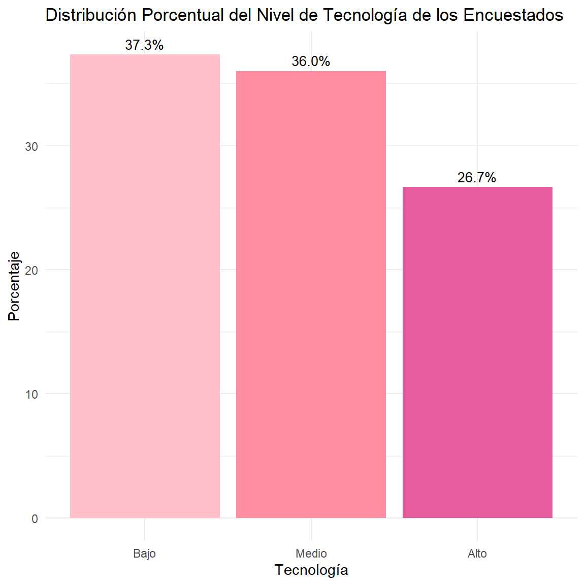
En relación con el nivel de tecnología de los 300 estudiantes encuestados, se observa una mayor concentración en los niveles bajo y medio. El nivel bajo presenta la mayor frecuencia, con 112 estudiantes, equivalentes al 37,33 % de la muestra, seguido por el nivel medio con 108 estudiantes (36 %). Por su parte, el nivel alto registra 80 estudiantes, correspondientes al 26,67 % del total.
De manera acumulada, los niveles bajo y medio reúnen al 73,33 % de los encuestados. La diferencia entre el nivel bajo y el nivel alto es de 10,66 puntos porcentuales, lo que evidencia una menor presencia de estudiantes con nivel tecnológico alto. En general, los resultados muestran una mayor concentración en niveles tecnológicos bajos y medios dentro de la muestra analizada.
Distribución de Frecuencias de los Encuestados según su Nivel de Satisfacción
# Crear la tabla originaltabla <-tibble(Satisfaccion = educacion$Satisfaccion) %>%group_by(Satisfaccion) %>%summarise(fi =n()) %>%mutate(hi =round(fi /sum(fi), 4), Porcentaje =paste0(round(hi *100, 2), "%"),Fi =cumsum(fi),Hi =cumsum(hi) )# Convertir columnas a character para evitar conflictostabla <- tabla %>%mutate(Satisfaccion =as.character(Satisfaccion),Fi =as.character(Fi),Hi =as.character(Hi) )# Añadir la fila de totalestotales <-tibble(Satisfaccion ="Total",fi =sum(tabla$fi),hi =round(sum(tabla$hi), 4),Porcentaje =paste0(round(sum(tabla$hi) *100, 2), "%"),Fi ="",Hi ="")# Combinar tabla y totalestabla_final <-bind_rows(tabla, totales)# Mostrar la tabla finaltabla_final %>% knitr::kable(col.names =c("Satisfacción","fi","hi","Porcentaje","Fi","Hi" ),align =c("l", "c", "c", "c", "c", "c") )
Satisfacción
fi
hi
Porcentaje
Fi
Hi
Muy alta
67
0.2233
22.33%
67
0.2233
Alta
65
0.2167
21.67%
132
0.44
Media
55
0.1833
18.33%
187
0.6233
Baja
65
0.2167
21.67%
252
0.84
Muy baja
48
0.1600
16%
300
1
Total
300
1.0000
100%
Ver código
Satisfaccion_counts <- educacion %>% dplyr::count(Satisfaccion) %>%mutate(porcentaje = n /sum(n) *100)ggplot(Satisfaccion_counts,aes(x = Satisfaccion,y = porcentaje,fill = Satisfaccion)) +geom_bar(stat ="identity") +scale_fill_manual(values =c("#FFC0CB", "#FF8DA1", "#E65C9C", "#F6A5C0", "#D96B9A") ) +labs(title ="Distribución Porcentual de la Satisfacción de los Encuestados",x ="Satisfacción",y ="Porcentaje" ) +theme_minimal() +theme(legend.position ="none") +geom_text(aes(label =sprintf("%.1f%%", porcentaje)),vjust =-0.5,color ="black",size =3.5 )
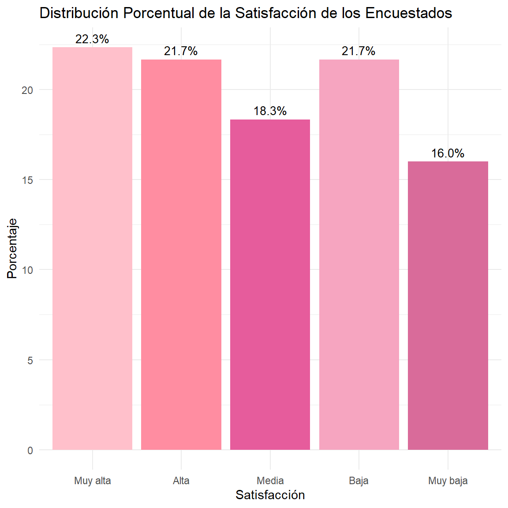
Al analizar la variable de satisfacción de los 300 estudiantes encuestados, se observa una distribución relativamente equilibrada entre las categorías consideradas. El nivel muy alto presenta la mayor frecuencia, con 67 estudiantes, equivalentes al 22,33 % de la muestra, seguido por los niveles alto y bajo, ambos con 65 estudiantes (21,67 %). El nivel medio agrupa a 55 estudiantes (18,33 %) y el nivel muy bajo a 48 (16 %).
Al agrupar las categorías, los niveles alto y muy alto representan conjuntamente el 44 % de los encuestados, mientras que los niveles bajo y muy bajo concentran el 37,67 %. En general, se evidencia una ligera tendencia hacia niveles de satisfacción favorables, aunque las percepciones se mantienen diversas dentro de la muestra analizada.
6.3 .Variable Discreta
ImportanteLa variable discreta tiene los cuatro tipos de frecuencias
Distribución de Frecuencias de los Encuestados según la Variable Curso
# Crear la tabla originaltabla <-tibble(Cursos = educacion$Cursos) %>%group_by(Cursos) %>%summarise(fi =n()) %>%mutate(hi =round(fi /sum(fi), 4), Porcentaje =paste0(round(hi *100, 2), "%"),Fi =cumsum(fi),Hi =cumsum(hi) )# Convertir columnas a character para evitar conflictostabla <- tabla %>%mutate(Cursos =as.character(Cursos),Fi =as.character(Fi),Hi =as.character(Hi) )# Añadir la fila de totalestotales <-tibble(Cursos ="Total",fi =sum(tabla$fi),hi =round(sum(tabla$hi), 4),Porcentaje =paste0(round(sum(tabla$hi) *100, 2), "%"),Fi ="",Hi ="")# Combinar tabla y totalestabla_final <-bind_rows(tabla, totales)# Mostrar la tabla finaltabla_final %>% knitr::kable(col.names =c("Cursos","fi","hi","Porcentaje","Fi","Hi" ),align =c("l", "c", "c", "c", "c", "c") )
Cursos
fi
hi
Porcentaje
Fi
Hi
1
41
0.1367
13.67%
41
0.1367
2
40
0.1333
13.33%
81
0.27
3
25
0.0833
8.33%
106
0.3533
4
40
0.1333
13.33%
146
0.4866
5
37
0.1233
12.33%
183
0.6099
6
41
0.1367
13.67%
224
0.7466
7
38
0.1267
12.67%
262
0.8733
8
38
0.1267
12.67%
300
1
Total
300
1.0000
100%
Ver código
df <- educacion %>% dplyr::count(Cursos) %>%mutate(porcentaje = n /sum(n) *100)ggplot(df, aes(x = Cursos, y = porcentaje)) +geom_point(shape =18, color ="#E65C9C") +geom_segment(aes(xend = Cursos, yend =0),size =1,color ="#FF8DA1" ) +labs(x ="Número de Cursos",y ="Porcentaje",title ="Diagrama de Bastones de la Variable Cursos" ) +theme_minimal() +geom_text(aes(label =paste0(round(porcentaje, 1), "%")),vjust =-0.5 )
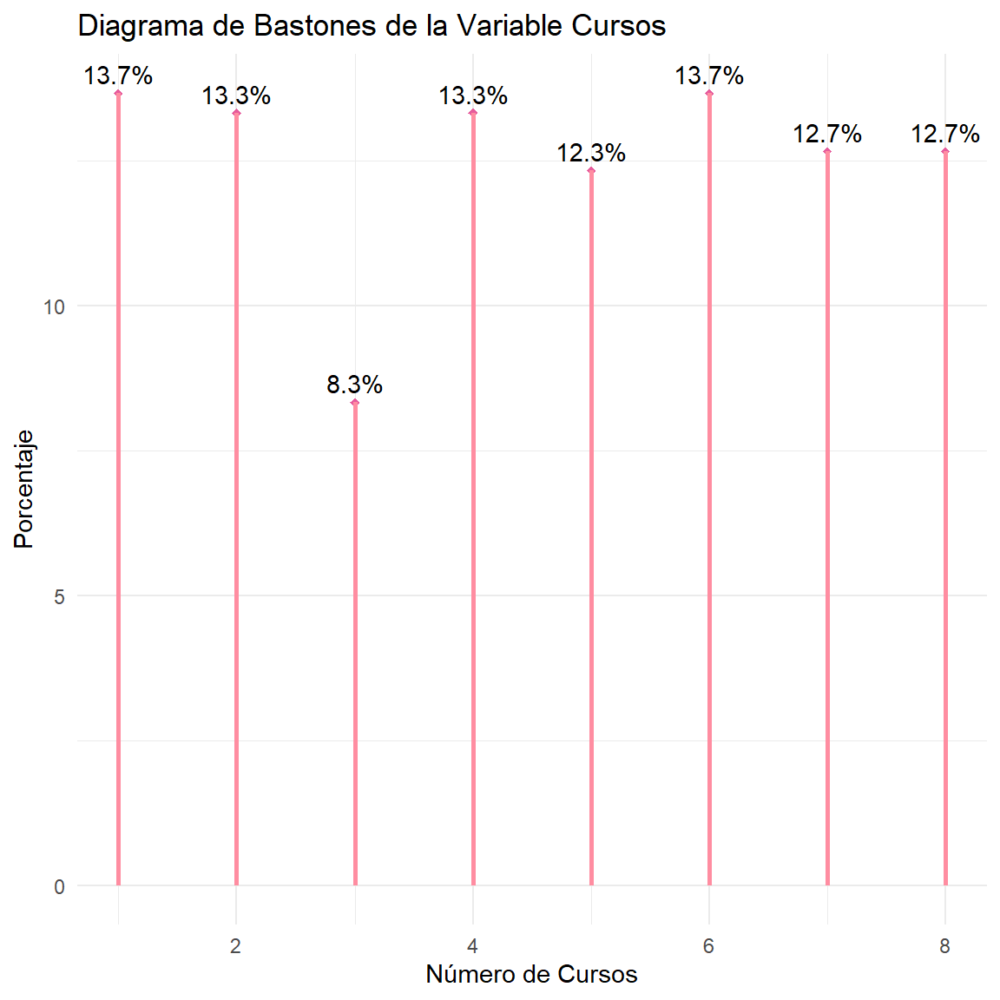
Ver código
# Cargar libreríaslibrary(ggplot2)library(dplyr)# Crear datos acumulados de la variable Cursosdf <- educacion %>% dplyr::count(Cursos) %>%arrange(Cursos) %>%mutate(hi = n /sum(n),Hi =cumsum(hi) )# Gráfica de función de distribución acumuladaggplot(df, aes(x = Cursos, y = Hi)) +geom_step(color ="#E65C9C", size =1.2) +geom_point(color ="#FF8DA1", size =3) +scale_x_continuous(breaks = df$Cursos) +scale_y_continuous(limits =c(0, 1)) +labs(title ="Función de Distribución Acumulada de la Variable Cursos",x ="Número de Cursos",y ="Frecuencia relativa acumulada (Hi)" ) +theme_minimal(base_size =14) +theme(plot.title =element_text(face ="bold", hjust =0.5),panel.grid.minor =element_blank() )
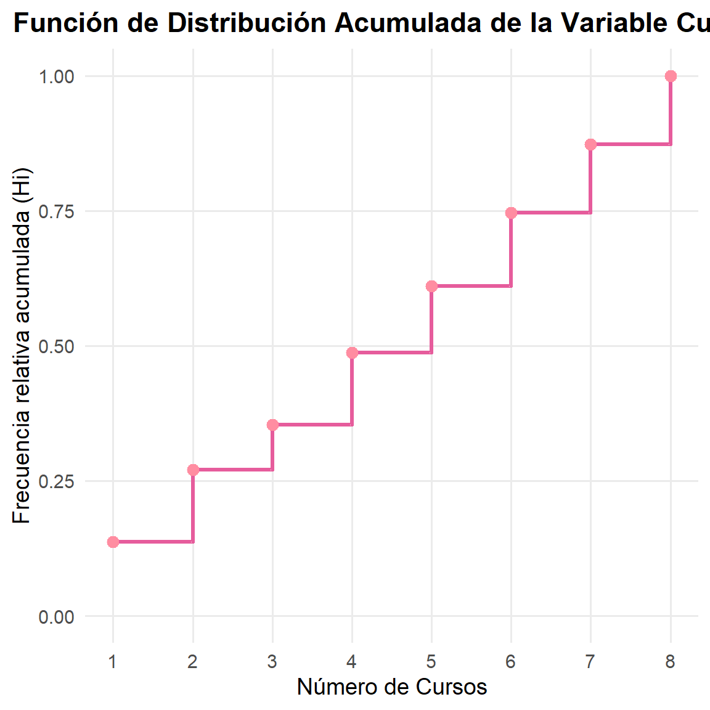
En cuanto al número de cursos reportado por los 300 estudiantes encuestados, se observa una distribución relativamente equilibrada entre la mayoría de las categorías. Los cursos 1 y 6 presentan las mayores frecuencias, con 41 estudiantes cada uno, equivalentes al 13,67 %. Les siguen los cursos 2 y 4 con 40 estudiantes (13,33 %), mientras que el curso 3 registra la menor participación con 25 estudiantes (8,33 %).
De forma acumulada, hasta el curso 5 se concentra el 60,99 % de los estudiantes, mientras que al incluir el curso 6 se alcanza el 74,66 % de la muestra. En general, la distribución no presenta diferencias marcadas entre la mayoría de los cursos, aunque se evidencia una menor representación en el curso 3, lo que permite identificar una composición relativamente uniforme en el número de cursos reportados por los participantes.
6.4 .Variable Continua
AdvertenciaLa variable continua se tabula con intervalos
d <-2# Número de decimales de la variableA <-ceiling((R / m) *10^d) /10^dA
[1] 2.88
Ver código
RC <- A*mRC
[1] 28.8
PrecauciónLa amplitud debe tener tanto decimales como lo tienen los datos originales. Si tiene un decimal la fórmula se multiplica y se divide por 10. Si tiene dos decimales la fórmula se multiplica y se divide por 100 y así sucesivamente.
NotaLa diferencia se debe dividir en dos números lo más equitativos de tal manera que estos números tengan tantos decimales como los datos originales. Al mínimo se le resta uno de los números y al máximo se le suma el otro.
Distribución de Frecuencias de los Encuestados según la Variable Horas
library(dplyr)library(kableExtra)m1 <- (Xmin+(Xmin+A))/2interv =cut(x = educacion$Horas, breaks =seq(Xmin, Xmax, by = A), include.lowest =TRUE)tabla <-tibble(Horas = interv) %>%group_by(Horas) %>%summarise(fi =n()) %>%mutate(hi = fi /sum(fi)) %>%mutate(mi =seq(m1, by = A, length.out =n()) %>%as.character(),Fi =cumsum(fi) %>%as.character(),Hi =cumsum(fi /sum(fi)) %>%as.character() ) %>%relocate(Horas, mi, fi)# Agregar la fila total con casillas en blancotabla <- tabla %>%add_row(Horas ="Total", mi ="", fi =sum(tabla$fi), hi =sum(tabla$hi), Fi ="", Hi ="")# Generar la tabla con knitr::kable y agregar títulotabla %>% knitr::kable(col.names =c("Horas", "mi", "fi", "hi", "Fi", "Hi"), align =c("l", "r", "r", "r", "r", "r") ) %>% kableExtra::kable_styling(full_width =FALSE) %>% kableExtra::add_header_above(c("Distribuciones de Frecuencias para la Variable Horas"=6))
Distribuciones de Frecuencias para la Variable Horas
Horas
mi
fi
hi
Fi
Hi
[1.21,4.08]
2.645
23
0.0766667
23
0.0766666666666667
(4.08,6.96]
5.525
27
0.0900000
50
0.166666666666667
(6.96,9.85]
8.405
29
0.0966667
79
0.263333333333333
(9.85,12.7]
11.285
22
0.0733333
101
0.336666666666667
(12.7,15.6]
14.165
29
0.0966667
130
0.433333333333333
(15.6,18.5]
17.045
29
0.0966667
159
0.53
(18.5,21.4]
19.925
40
0.1333333
199
0.663333333333333
(21.4,24.2]
22.805
34
0.1133333
233
0.776666666666667
(24.2,27.1]
25.685
34
0.1133333
267
0.89
(27.1,30]
28.565
33
0.1100000
300
1
Total
300
1.0000000
Ver código
# Libreríalibrary(ggplot2)# Datos de tu tabla de distribuciónhoras <-data.frame(li =c(1.2, 4.08, 6.96, 9.85, 12.7, 15.6, 18.5, 21.4, 24.2, 27.1),ls =c(4.08, 6.96, 9.85, 12.7, 15.6, 18.5, 21.4, 24.2, 27.1, 30),fi =c(23, 27, 29, 22, 29, 29, 40, 34, 34, 33))# Histograma con los 10 intervalosggplot(horas) +geom_rect(aes(xmin = li,xmax = ls,ymin =0,ymax = fi ),fill ="#FF8DA1",color ="#E65C9C" ) +labs(title ="Histograma de la Variable Horas",x ="Horas",y ="Frecuencia" ) +theme_minimal(base_size =14) +theme(plot.title =element_text(hjust =0.5,face ="bold" ) )
En la distribución de la variable horas correspondiente a los 300 estudiantes encuestados, se observa una mayor concentración en los intervalos centrales y superiores. El intervalo (18,5–21,4] presenta la frecuencia más alta, con 40 estudiantes, equivalente al 13,33 % de la muestra, seguido por los intervalos (21,4–24,2] y (24,2–27,1], ambos con 34 estudiantes (11,33 %). El intervalo (9,85–12,7] registra la menor frecuencia, con 22 estudiantes (7,33 %).
En términos acumulados, hasta el intervalo (18,5–21,4] se concentra el 66,33 % de los estudiantes, mientras que al incluir el intervalo (24,2–27,1] se alcanza el 89 % de la muestra. En general, los datos muestran una distribución relativamente dispersa, aunque con una mayor presencia de estudiantes en los rangos medios y altos de horas, especialmente a partir de 18,5 horas.
d <-2# Número de decimales de la variableA <-ceiling((R / m) *10^d) /10^dA
[1] 0.4
Ver código
RC <- A*mRC
[1] 4
TipLa amplitud debe tener tanto decimales como lo tienen los datos originales. Si tiene un decimal la fórmula se multiplica y se divide por 10. Si tiene dos decimales la fórmula se multiplica y se divide por 100 y así sucesivamente.
ImportanteLa diferencia se debe dividir en dos números lo más equitativos de tal manera que estos números tengan tantos decimales como los datos originales. Al mínimo se le resta uno de los números y al máximo se le suma el otro.
Distribución de Frecuencias de los Encuestados según la Variable Promedio
library(dplyr)library(kableExtra)m1 <- (Xmin+(Xmin+A))/2interv =cut(x = educacion$Promedio, breaks =seq(Xmin, Xmax, by = A), include.lowest =TRUE)tabla <-tibble(Promedio = interv) %>%group_by(Promedio) %>%summarise(fi =n()) %>%mutate(hi = fi /sum(fi)) %>%mutate(mi =seq(m1, by = A, length.out =n()) %>%as.character(),Fi =cumsum(fi) %>%as.character(),Hi =cumsum(fi /sum(fi)) %>%as.character() ) %>%relocate(Promedio, mi, fi)# Agregar la fila total con casillas en blancotabla <- tabla %>%add_row(Promedio ="Total", mi ="", fi =sum(tabla$fi), hi =sum(tabla$hi), Fi ="", Hi ="")# Generar la tabla con knitr::kable y agregar títulotabla %>% knitr::kable(col.names =c("Promedio", "mi", "fi", "hi", "Fi", "Hi"), align =c("l", "r", "r", "r", "r", "r") ) %>% kableExtra::kable_styling(full_width =FALSE) %>% kableExtra::add_header_above(c("Distribuciones de Frecuencias para la Variable Promedio"=6))
Distribuciones de Frecuencias para la Variable Promedio
Promedio
mi
fi
hi
Fi
Hi
[1.01,1.41]
1.21
28
0.0933333
28
0.0933333333333333
(1.41,1.81]
1.61
30
0.1000000
58
0.193333333333333
(1.81,2.21]
2.01
32
0.1066667
90
0.3
(2.21,2.61]
2.41
17
0.0566667
107
0.356666666666667
(2.61,3.01]
2.81
35
0.1166667
142
0.473333333333333
(3.01,3.41]
3.21
37
0.1233333
179
0.596666666666667
(3.41,3.81]
3.61
29
0.0966667
208
0.693333333333333
(3.81,4.21]
4.01
35
0.1166667
243
0.81
(4.21,4.61]
4.41
25
0.0833333
268
0.893333333333333
(4.61,5.01]
4.81
32
0.1066667
300
1
Total
300
1.0000000
Ver código
# Libreríaslibrary(ggplot2)# Dataframe con los datos de Promediopromedio <-data.frame(li =c(1.01, 1.41, 1.81, 2.21, 2.61, 3.01, 3.41, 3.81, 4.21, 4.61),ls =c(1.41, 1.81, 2.21, 2.61, 3.01, 3.41, 3.81, 4.21, 4.61, 5.01),fi =c(28, 30, 32, 17, 35, 37, 29, 35, 25, 32))# Histograma real con intervalosggplot(promedio) +geom_rect(aes(xmin = li,xmax = ls,ymin =0,ymax = fi ),fill ="#FF8DA1",color ="#E65C9C" ) +labs(title ="Histograma de la Variable Promedio",x ="Promedio",y ="Frecuencia" ) +theme_minimal(base_size =14) +theme(plot.title =element_text(hjust =0.5, face ="bold") )
En cuanto a la variable promedio de los 300 estudiantes encuestados, se observa una distribución repartida entre los distintos intervalos, aunque con una mayor concentración en los valores intermedios. El intervalo (3,01–3,41] presenta la frecuencia más alta, con 37 estudiantes, equivalente al 12,33 % de la muestra, seguido por los intervalos (2,61–3,01] y (3,81–4,21], ambos con 35 estudiantes (11,67 %). El intervalo (2,21–2,61] registra la menor frecuencia, con 17 estudiantes (5,67 %).
De manera acumulada, hasta el intervalo (3,01–3,41] se concentra el 59,67 % de los estudiantes, mientras que al incluir el intervalo (3,81–4,21] se alcanza el 81 % de la muestra. En general, los datos muestran una mayor concentración de promedios en los rangos medios, aunque también se observa participación en los valores altos, lo que refleja una distribución relativamente amplia del desempeño académico.
Generación de Intervalos de la Variable Asistencia
d <-2# Número de decimales de la variableA <-ceiling((R / m) *10^d) /10^dA
[1] 4.96
Ver código
RC <- A*mRC
[1] 49.6
NotaLa amplitud debe tener tanto decimales como lo tienen los datos originales. Si tiene un decimal la fórmula se multiplica y se divide por 10. Si tiene dos decimales la fórmula se multiplica y se divide por 100 y así sucesivamente.
TipLa diferencia se debe dividir en dos números lo más equitativos de tal manera que estos números tengan tantos decimales como los datos originales. Al mínimo se le resta uno de los números y al máximo se le suma el otro.
Distribución de Frecuencias de los Encuestados según la Variable Asistencia
library(dplyr)library(kableExtra)m1 <- (Xmin+(Xmin+A))/2interv =cut(x = educacion$`Asistencia (%)`,breaks =seq(Xmin, Xmax, by = A),include.lowest =TRUE)tabla <-tibble(Asistencia = interv) %>%group_by(Asistencia) %>%summarise(fi =n()) %>%mutate(hi = fi /sum(fi)) %>%mutate(mi =seq(m1, by = A, length.out =n()) %>%as.character(),Fi =cumsum(fi) %>%as.character(),Hi =cumsum(fi /sum(fi)) %>%as.character() ) %>%relocate(Asistencia, mi, fi)# Agregar la fila total con casillas en blancotabla <- tabla %>%add_row(Asistencia ="Total", mi ="", fi =sum(tabla$fi), hi =sum(tabla$hi), Fi ="", Hi ="" )# Generar la tabla con knitr::kable y agregar títulotabla %>% knitr::kable(col.names =c("Asistencia", "mi", "fi", "hi", "Fi", "Hi"), align =c("l", "r", "r", "r", "r", "r") ) %>% kableExtra::kable_styling(full_width =FALSE) %>% kableExtra::add_header_above(c("Distribuciones de Frecuencias para la Variable Asistencia"=6) )
Distribuciones de Frecuencias para la Variable Asistencia
Asistencia
mi
fi
hi
Fi
Hi
[50.2,55.1]
52.64
38
0.1266667
38
0.126666666666667
(55.1,60.1]
57.6
33
0.1100000
71
0.236666666666667
(60.1,65]
62.56
30
0.1000000
101
0.336666666666667
(65,70]
67.52
24
0.0800000
125
0.416666666666667
(70,75]
72.48
22
0.0733333
147
0.49
(75,79.9]
77.44
14
0.0466667
161
0.536666666666667
(79.9,84.9]
82.4
38
0.1266667
199
0.663333333333333
(84.9,89.8]
87.36
28
0.0933333
227
0.756666666666667
(89.8,94.8]
92.32
38
0.1266667
265
0.883333333333333
(94.8,99.8]
97.28
35
0.1166667
300
1
Total
300
1.0000000
Ver código
# Libreríaslibrary(ggplot2)# Crear los intervalos y frecuencias con los datos de Asistenciahist_asistencia <-hist( educacion$`Asistencia (%)`,breaks =10,plot =FALSE)# Dataframe con los datos de Asistenciaasistencia <-data.frame(li =head(hist_asistencia$breaks, -1),ls =tail(hist_asistencia$breaks, -1),fi = hist_asistencia$counts)# Histograma real con intervalosggplot(asistencia) +geom_rect(aes(xmin = li,xmax = ls,ymin =0,ymax = fi ),fill ="#FF8DA1",color ="#E65C9C" ) +labs(title ="Histograma de la Variable Asistencia",x ="Asistencia (%)",y ="Frecuencia" ) +theme_minimal(base_size =14) +theme(plot.title =element_text(hjust =0.5, face ="bold") )
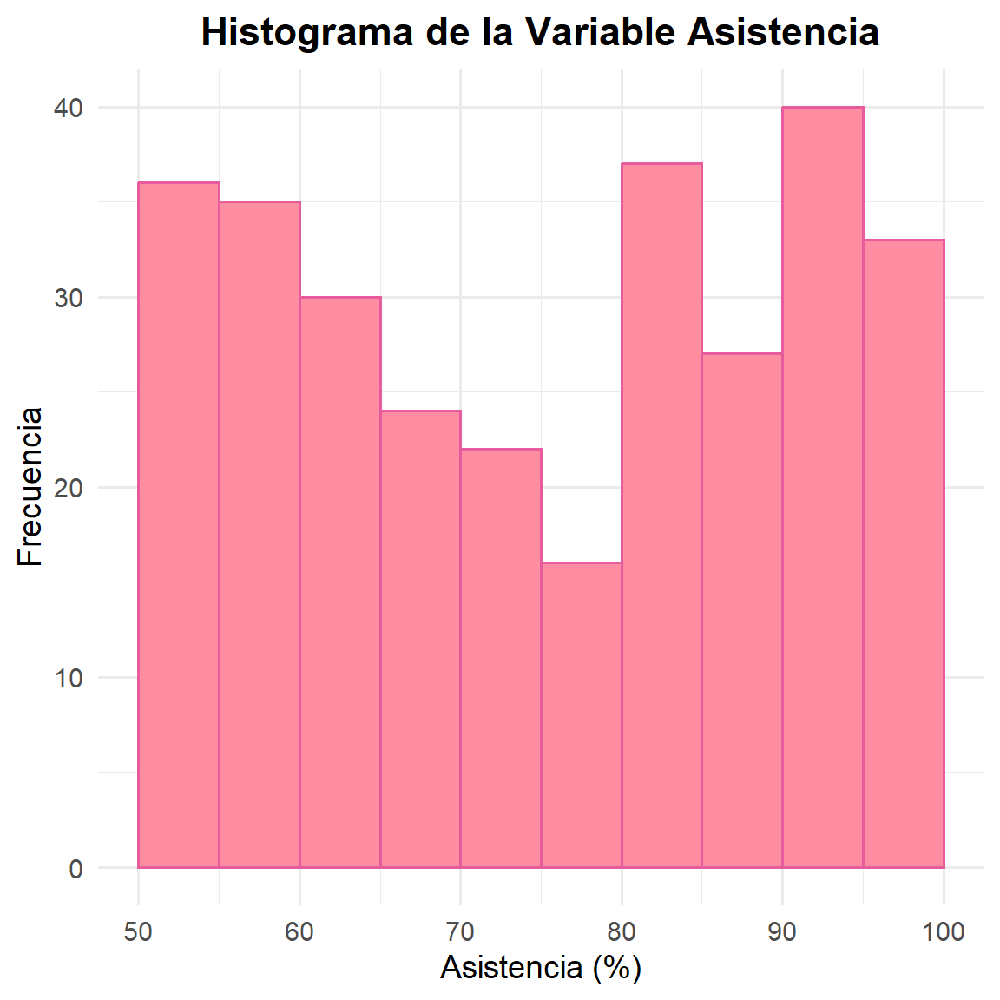
Ver código
library(dplyr)library(ggplot2)library(tibble)# Crear los intervalos y frecuencias con los datos de Asistenciahist_asistencia <-hist( educacion$`Asistencia (%)`,breaks =10,plot =FALSE)asistencia <-tibble(li =head(hist_asistencia$breaks, -1),ls =tail(hist_asistencia$breaks, -1),fi = hist_asistencia$counts)# Calcular acumuladasasistencia <- asistencia %>%mutate(Fi =cumsum(fi),Hi = Fi /sum(fi) )# Graficar ojivaggplot(asistencia, aes(x = ls, y = Hi)) +geom_line(color ="#E65C9C", size =1) +geom_point(color ="#FF8DA1", size =2) +labs(title ="Ojiva de la Variable Asistencia",x ="Asistencia (%) (Límite Superior del Intervalo)",y ="Frecuencia Acumulada Relativa" ) +scale_y_continuous(labels = scales::percent) +theme_minimal()
Al revisar la distribución de la variable asistencia en los 300 estudiantes encuestados, se aprecia una mayor presencia en algunos intervalos específicos. Los rangos [50,2–55,1], (79,9–84,9] y (89,8–94,8] presentan las frecuencias más altas, con 38 estudiantes cada uno, equivalentes al 12,67 % de la muestra. En contraste, el intervalo (75–79,9] registra la menor frecuencia, con 14 estudiantes, correspondiente al 4,67 %.
Desde una perspectiva acumulada, hasta el intervalo (79,9–84,9] se concentra el 66,33 % de los estudiantes, mientras que al incluir el rango (89,8–94,8] se alcanza el 88,33 %. En general, la asistencia presenta una distribución heterogénea, con concentraciones importantes tanto en niveles bajos como altos, aunque se observa una presencia considerable de estudiantes en los rangos superiores de asistencia.
# Cargar las bibliotecas necesariaslibrary(dplyr)library(readxl)library(kableExtra)# Filtrar y ordenar la variable Nivel_Educativoeducacion_filtrada <- educacion %>%filter(Nivel_Educativo %in%c("Secundaria", "Universidad")) %>%mutate(Nivel_Educativo =factor( Nivel_Educativo,levels =c("Secundaria", "Universidad") ) )# Crear una tabla de contingencia con Nivel_Educativo y Estratotable_educativo_estrato <-table( educacion_filtrada$Nivel_Educativo, educacion_filtrada$Estrato)# Convertir la tabla a un data frame para facilitar el manejo de datostable_df <-as.data.frame.matrix(table_educativo_estrato)# Calcular los totales de frecuencia absoluta (Total)table_df$Total <-rowSums(table_df) # Totales por filatotal_fi <-sum(table_df$Total) # Total general# Añadir una fila de totales al final de la tablatable_df <-rbind( table_df,Total =c(colSums(table_educativo_estrato), total_fi))# Mostrar la tabla con kableExtratable_df %>%kable("html",caption ="Tabla de Frecuencias Absolutas de Nivel Educativo vs Estrato de los Encuestados" ) %>%kable_styling(bootstrap_options =c("striped", "hover", "condensed", "responsive"),full_width = F,position ="center" )
Tabla de Frecuencias Absolutas de Nivel Educativo vs Estrato de los Encuestados
Bajo
Medio
Alto
Total
Secundaria
30
46
29
105
Universidad
37
30
35
102
Total
67
76
64
207
Ver código
# Cargar las bibliotecas necesariaslibrary(dplyr)library(readxl)library(kableExtra)# Filtrar y ordenar la variable Nivel_Educativoeducacion_filtrada <- educacion %>%filter(Nivel_Educativo %in%c("Secundaria", "Universidad")) %>%mutate(Nivel_Educativo =factor( Nivel_Educativo,levels =c("Secundaria", "Universidad") ) )# Crear una tabla de contingencia con Nivel_Educativo y Estratotable_educativo_estrato <-table( educacion_filtrada$Nivel_Educativo, educacion_filtrada$Estrato)# Convertir la tabla a un data frame para facilitar el manejo de datostable_df <-as.data.frame.matrix(table_educativo_estrato)# Calcular el total general para las frecuencias relativastotal_fi <-sum(table_df)# Calcular las frecuencias relativastable_df <- table_df / total_fi# Calcular los totales de frecuencia relativa por fila y columnatable_df$Total <-rowSums(table_df)total_column <-colSums(table_df)# Añadir una fila de totales al final de la tablatable_df <-rbind(table_df, Total = total_column)# Mostrar la tabla con kableExtratable_df %>%kable("html",caption ="Tabla de Frecuencias Relativas de Nivel Educativo vs Estrato de los Encuestados" ) %>%kable_styling(bootstrap_options =c("striped", "hover", "condensed", "responsive"),full_width = F,position ="center" )
Tabla de Frecuencias Relativas de Nivel Educativo vs Estrato de los Encuestados
Bajo
Medio
Alto
Total
Secundaria
0.1449275
0.2222222
0.1400966
0.5072464
Universidad
0.1787440
0.1449275
0.1690821
0.4927536
Total
0.3236715
0.3671498
0.3091787
1.0000000
Ver código
# Cargar las librerías necesariaslibrary(ggplot2)library(dplyr)library(readxl)# Cambiar el orden de Nivel_Educativoeducacion$Nivel_Educativo <-factor( educacion$Nivel_Educativo,levels =c("Secundaria", "Universidad"))# Calcular los porcentajes de cada categoría de Estrato dentro de cada Nivel_Educativodata_porcentaje <- educacion %>%count(Nivel_Educativo, Estrato) %>%group_by(Nivel_Educativo) %>%mutate(porcentaje = n /sum(n) *100)# Crear el diagrama de barras conjuntas con porcentajesggplot(data_porcentaje, aes(x = Nivel_Educativo, y = porcentaje, fill = Estrato)) +geom_bar(stat ="identity", position ="dodge") +# Usar "stack" si deseas barras apiladasscale_fill_manual(values =c("#E65C9C", "#FF8DA1", "#FFC0CB")) +labs(title ="Distribución Porcentual del Estrato por el Nivel Educativo",x ="Nivel Educativo",y ="Porcentaje",fill ="Estrato") +theme_minimal() +geom_text(aes(label =sprintf("%.1f%%", porcentaje)), position =position_dodge(0.9), vjust =-0.5, size =3)
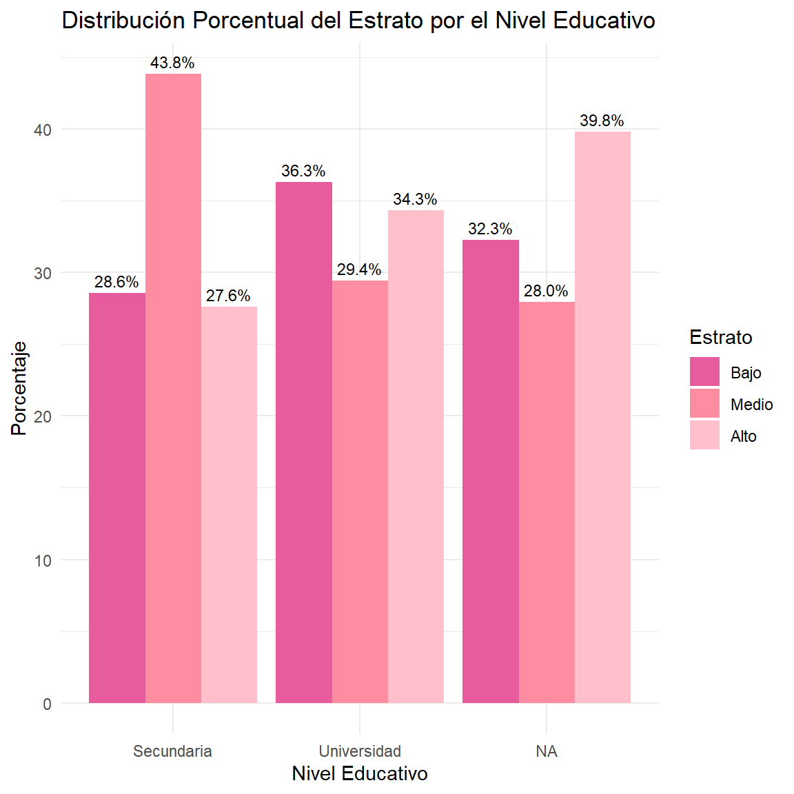
Ver código
# Cargar las librerías necesariaslibrary(ggplot2)library(dplyr)library(readxl)# Calcular los porcentajes de cada categoría de Estrato dentro de cada Nivel_Educativodata_porcentaje <- educacion %>%mutate(Nivel_Educativo =as.character(Nivel_Educativo),Nivel_Educativo =ifelse(is.na(Nivel_Educativo),"NA", Nivel_Educativo ),Nivel_Educativo =factor( Nivel_Educativo,levels =c("Secundaria", "Universidad", "NA") ) ) %>%count(Nivel_Educativo, Estrato) %>%group_by(Nivel_Educativo) %>%mutate(porcentaje = n /sum(n) *100)# Crear el diagrama de barras apiladas con porcentajesggplot(data_porcentaje, aes(x = Nivel_Educativo, y = porcentaje, fill = Estrato)) +geom_bar(stat ="identity", position ="stack") +scale_fill_manual(values =c("#E65C9C", "#FF8DA1", "#FFC0CB")) +labs(title ="Distribución Porcentual del Estrato por el Nivel Educativo",x ="Nivel Educativo",y ="Porcentaje",fill ="Estrato") +theme_minimal() +geom_text(aes(label =sprintf("%.1f%%", porcentaje)), position =position_stack(vjust =0.5), color ="white",size =3)
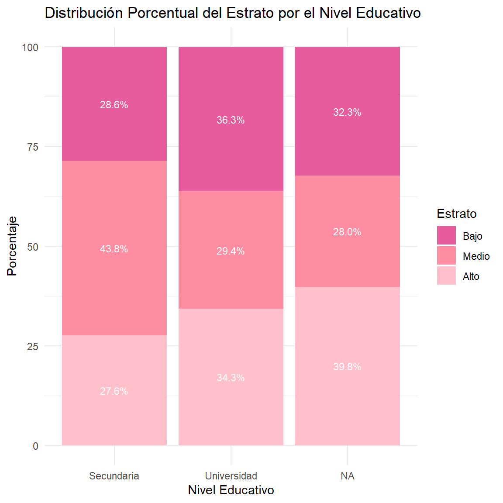
Ver código
# Cargar las librerías necesariaslibrary(ggplot2)library(dplyr)library(readxl)# Calcular los porcentajes de cada categoría de Estrato dentro de cada Nivel_Educativodata_porcentaje <- educacion %>%mutate(Nivel_Educativo =as.character(Nivel_Educativo),Nivel_Educativo =ifelse(is.na(Nivel_Educativo), "NA", Nivel_Educativo),Nivel_Educativo =factor( Nivel_Educativo,levels =c("NA", "Universidad", "Secundaria") ) ) %>%count(Nivel_Educativo, Estrato) %>%group_by(Nivel_Educativo) %>%mutate(porcentaje = n /sum(n) *100)# Crear el diagrama de barras apiladas en forma horizontal con porcentajesggplot(data_porcentaje, aes(x = Nivel_Educativo, y = porcentaje, fill = Estrato)) +geom_bar(stat ="identity", position ="stack") +scale_fill_manual(values =c("#E65C9C", "#FF8DA1", "#FFC0CB")) +labs(title ="Distribución Porcentual de Estrato por Nivel Educativo",x ="Nivel Educativo",y ="Porcentaje",fill ="Estrato") +theme_minimal() +geom_text(aes(label =sprintf("%.1f%%", porcentaje)), position =position_stack(vjust =0.5), color ="white",size =3) +coord_flip()
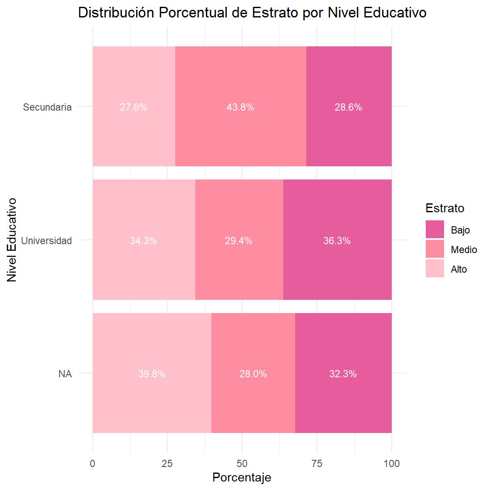
En la tabla de frecuencias absolutas se observa que, entre los 207 estudiantes considerados, el grupo más numeroso corresponde a quienes tienen nivel educativo de Secundaria y pertenecen al estrato medio, con 46 estudiantes. En el caso de Universidad, la mayor frecuencia se presenta en el estrato bajo, con 37 estudiantes, seguida del estrato alto con 35. En términos generales, el estrato medio concentra la mayor cantidad de estudiantes, con 76 casos, mientras que el estrato alto presenta la menor frecuencia total, con 64.
Por su parte, la tabla de frecuencias relativas muestra que el 22,22 % del total corresponde a estudiantes de Secundaria ubicados en el estrato medio, siendo la combinación con mayor peso relativo. Le siguen los estudiantes universitarios de estrato bajo, con 17,87 %, y los universitarios de estrato alto, con 16,91 %. En conjunto, los estudiantes de Secundaria representan el 50,72 % de la muestra y los universitarios el 49,28 %, lo que evidencia una distribución bastante equilibrada entre ambos niveles educativos.